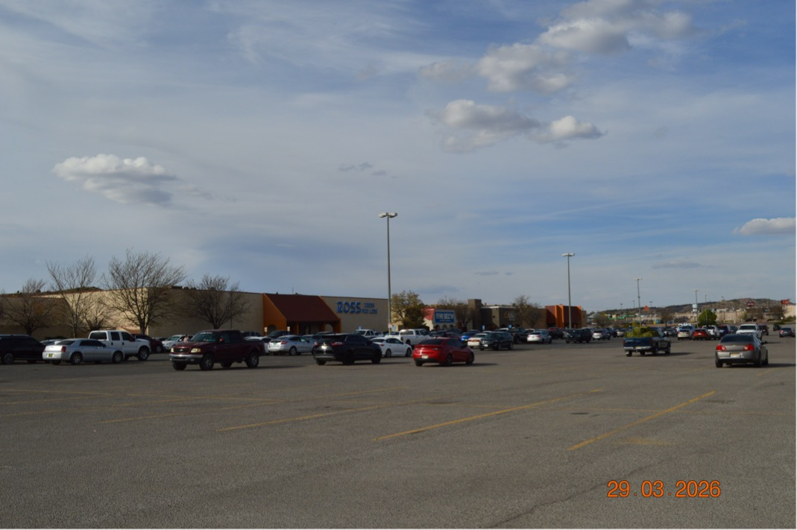
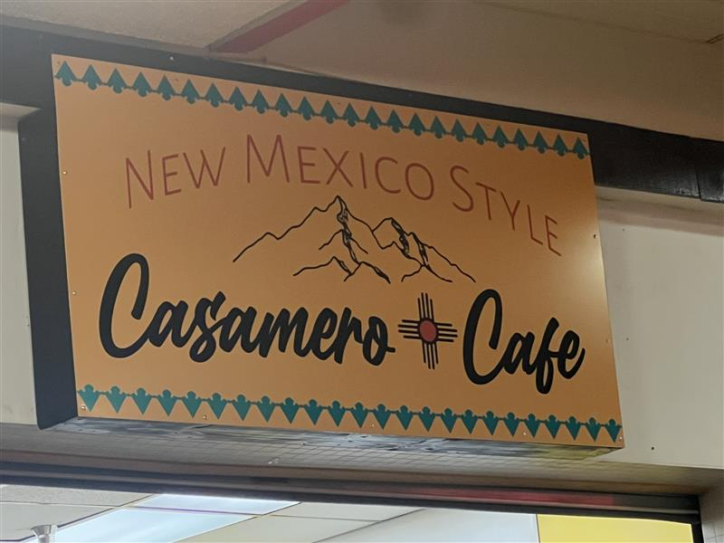

Rio West Mall
Rio West Mall is an active shopping and entertainment center in Gallup, New Mexico. As of March 2026, the mall features over 40 shops, a food court, and
various entertainment options including a movie theater, mini-golf, and a children's museum

Easter Bunny Visits & Photos
Fri, Mar 20 | Rio West Mall
11th Annual Spring Job Fair
Fri, Apr 10 | Rio West Mall
Collectibles
4 dates in 2026 | 1300 W Maloney Ave, 1300 W Maloney Ave, Gallup, NM 87301, USA
Double U Grill
Specializes in American fare such as large burgers, sandwiches, and unique snacks like "Piccadilly".
Click Now To See the Menu

Casamero Cafe
Offers authentic New Mexican and Mexican dishes, including birria tacos, birria ramen, and specialty fries.
Click Now To See The Menu
Quick Pops
Serves a diverse menu including Korean corn dogs, ramen, pho, boba drinks, and rice bowls.
Click Now To See The Menu
Frutas Lokas
A snack shop frequently mentioned in the food court that serves various drinks and snacks.
Click Now To See The Menu